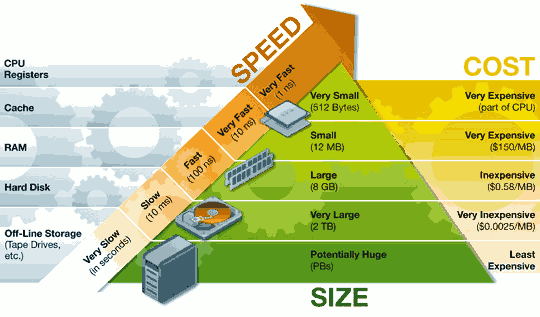

存储器系统(memory system)是一个具有不同 容量 、 成本 和 访问时间 的存储设备的层次结构。
局部性(locality)：具有良好局部性的程序倾向于一次又一次地访问相同的数据项集合，或是倾向于访问邻近的数据项集合。
1 存储技术
随机访问存储器(Random-Access Memory, RAM)分为两类：静态(SRAM)和动态(DRAM)的。SRAM比DRAM更快，但也贵得多。
2 局部性
一个编写良好的计算机程序常常具有良好的局部性(locality)。也就是，它们倾向于引用邻近于其他最近引用过的数据项的数据项(空间局部性)，或者最近引用过的数据项本身(时间局部性)。
现代计算机系统的各个层次，从硬件到操作系统、再到应用程序，它们的设计都利用了局部性。
3 存储器层次结构 Memory Hierarchy
一般而言，从高层往低层走，存储设备变得更慢、更便宜和更大。

虚拟内存 Virtual Memory
虚拟内存(Virtual Memory)是一个抽象概念。它为每个进程提供了假象，即每个进程都在独占地使用内存。每个进程看到的内存都是一致的，称为虚拟地址空间Virtual Address Space.
虚拟内存在不同操作系统上有区别，以Linux系统为例,下面是Linux x86-64运行时的内存映像。

虚拟地址空间由如下几部分组成：
- 代码（
.text）: 这里存放的是CPU要执行的指令。代码段是可共享的，相同的代码在内存中只会有一个拷贝，同时这个段是只读的，防止程序由于错误而修改自身的指令。
- 初始化数据段（
.data）: 这里存放的是程序中需要明确赋初始值的变量，例如位于所有函数之外的全局变量：int val="100。需要强调的是，以上两段都是位于程序的可执行文件中，内核在调用exec函数启动该程序时从源程序文件中读入。
- 未初始化数据段（
.bss）: 位于这一段中的数据，内核在执行该程序前，将其初始化为0或者null。例如出现在任何函数之外的全局变量：int sum;
- 堆（
Heap）: 这个段用于在程序中进行动态内存申请，例如经常用到的malloc，new系列函数就是从这个段中申请内存。
- 共享库(
Shared Library): 用来存放像C标准库和数学哭这样的共享库的代码和数据的区域。
- 栈（
Stack）: 函数中的局部变量以及在函数调用过程中产生的临时变量都保存在此段中，具体见下面一节。
- 内核虚拟内存：包含内核中的代码和数据结构。
注意：
- 底部内存地址是最小的，越往上地址越大。
- 堆(正向增长)和栈(反向增长)的生长方向(箭头➡️所指方向)是相反的。
下面是程序示意：
#include<stdio.h>
#include <malloc.h>
void print(char *,int);
int main()
{
char *s1 = "abcde"; //"abcde"作为字符串常量存储在常量区 s1、s2、s5拥有相同的地址
char *s2 = "abcde";
char s3[] = "abcd";
long int *s4[100];
char *s5 = "abcde";
int a = 5;
int b =6;//a,b在栈上，&a>&b地址反向增长
printf("variables address in main function: s1=%p s2=%p s3=%p s4=%p s5=%p a=%p b=%p \n",
s1,s2,s3,s4,s5,&a,&b);
printf("variables address in processcall:n");
print("ddddddddd",5);//参数入栈从右至左进行,p先进栈,str后进 &p>&str
printf("main=%p print=%p \n",main,print);
//打印代码段中主函数和子函数的地址，编译时先编译的地址低，后编译的地址高main<print
}
void print(char *str,int p)
{
char *s1 = "abcde"; //abcde在常量区，s1在栈上
char *s2 = "abcde"; //abcde在常量区，s2在栈上 s2-s1=6可能等于0，编译器优化了相同的常量，只在内存保存一份
//而&s1>&s2
char s3[] = "abcdeee";//abcdeee在常量区，s3在栈上，数组保存的内容为abcdeee的一份拷贝
long int *s4[100];
char *s5 = "abcde";
int a = 5;
int b =6;
int c;
int d; //a,b,c,d均在栈上，&a>&b>&c>&d地址反向增长
char *q=str;
int m=p;
char *r=(char *)malloc(1);
char *w=(char *)malloc(1) ; // r<w 堆正向增长
printf("s1=%p s2=%p s3=%p s4=%p s5=%p a=%p b=%p c=%p d=%p str=%p q=%p p=%p m=%p r=%p w=%p \n",
s1,s2,s3,s4,s5,&a,&b,&c,&d,&str,q,&p,&m,r,w);
/* 栈和堆是在程序运行时候动态分配的，局部变量均在栈上分配。
栈是反向增长的，地址递减；malloc等分配的内存空间在堆空间。堆是正向增长的，地址递增。
r,w变量在栈上(则&r>&w)，r,w所指内容在堆中(即r<w)。*/
}